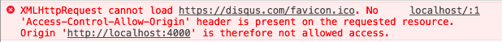

早些时候就听学长说关于跨域的事，虽然一直没遇到过这类问题，但是对跨域却是早有耳闻。
跨域问题的出现是因为浏览器同源政策。
这次暑假留校，做类似智能家居的app，为了降低开发成本，采用h5开发app，并且使用的是jQuery Mobile的框架。连接后台的方式倒是和一般网页一致。
app端全部采用ajax的方式提交以及获取数据。第一次获取数据时，就出现了跨域的问题。

然后 去网上找资料，ajax如何跨域，有大牛写的挺全面， 浏览器同源政策及其规避方法 我这就只记录下 通过jsonp的形式请求spring的后台，并返回jsonp格式的数据。
首先很重要的一点是 jsonp 只接受 GET 请求。
1
2
3
4
5
6
7
8
9
10
11
12
13
14
15
16
17
| $.ajax({
url: "localhost:9090/app/login",
type: 'GET',
jsonp: "callback",
dataType: "jsonp",
data: {
account: account,
passwd: passwd
},
success: function(data){
if(data.status===1){
console.log('登录成功');
}else{
console.log('登录失败');
}
}
});
|
- 返回的数据类型
datatype 是 jsonp。
- 然后通过
jsonp 来指定回调函数。
type 指定为 GET 请求。
1
2
3
4
5
6
7
8
9
10
11
12
13
14
15
16
17
| @RequestMapping(value = "login")
@ResponseBody
public String login(HttpServletRequest req, HttpServletResponse res) {
String callback = req.getParameter("callback");
String account = req.getParameter("account");
String passwd = req.getParameter("passwd");
User user = userService.checkLogin(account,passwd);
String jsonString = JSONObject.toJSONString(user);
return callback + "(" + jsonString + ")";
}
|
如果直接返回json字符串，会直接进入ajax的error的方法里，因为传回的数据格式和指定的不一致。
1
2
3
4
5
6
| // 这是返回的response的内容
// jQuery183014047024586768142_1499770090335 是随机生成的回调函数名。
jQuery183014047024586768142_1499770090335({
"id":1,
"username":"admin"
})
|
react jsonp实现跨域请求
1
2
3
4
5
6
7
8
9
10
11
12
13
| import fetchJsonp from 'fetch-jsonp';
handleSubmit(e) {
fetchJsonp('http://localhost:9090/app/login?account=admin&passwd=123456')
.then(function(response) {
return response.json();
}).then(function(json) {
console.log('parsed json', json)
}).catch(function(ex) {
console.log('parsing failed', ex)
});
}
|